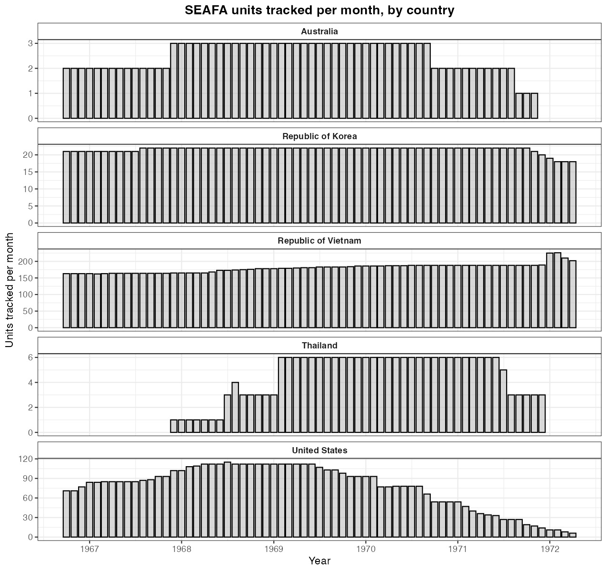
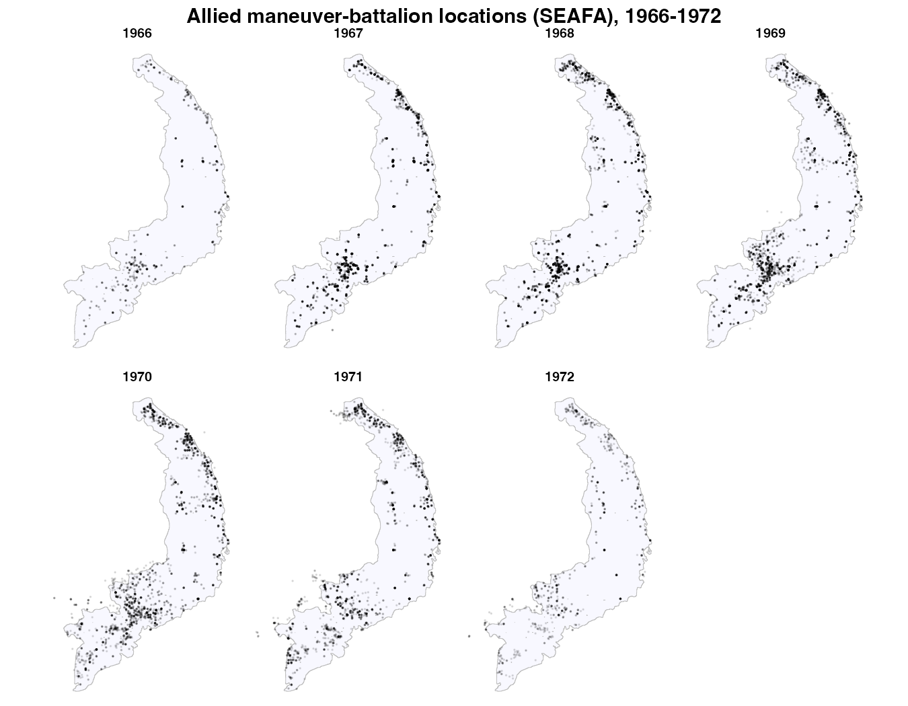
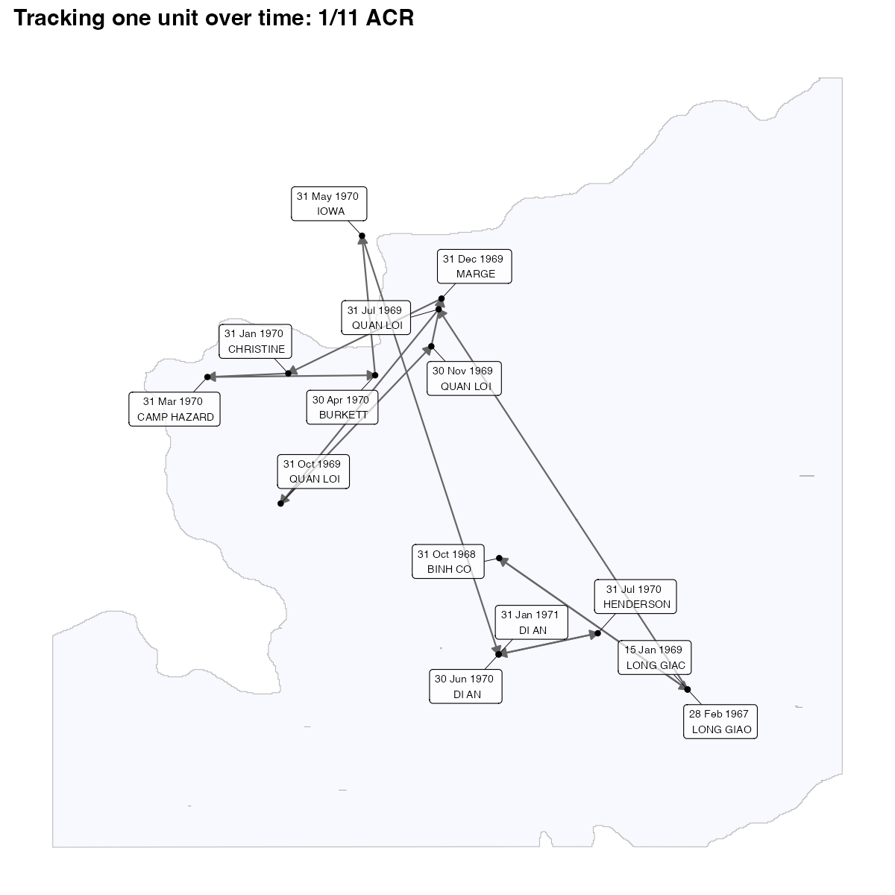

Mapping Allied Unit Locations (SEAFA)
Source:vignettes/seafa-unit-locations.Rmd
seafa-unit-locations.RmdThe Southeast Asia Forces Activity file (get_seafa())
records the monthly location of American, South Vietnamese, and Allied
maneuver battalions, 1966–1972. This article counts the units tracked
over time, maps every battalion location by year, and follows a single
unit’s movements — adapting the data-paper’s SEAFA overview scripts.
One detail: SEAFA’s lat/lng arrive as
character, so coerce them to numeric first. Code chunks are not run at
build time; the figures are pre-rendered.
Setup
library(VietnamWarData)
library(dplyr)
library(lubridate)
library(sf)
library(ggplot2)
library(ggrepel)
seafa <- get_seafa() |>
mutate(lat = as.numeric(lat), lng = as.numeric(lng),
record_date = as.Date(record_date))
sv_outline <- get_province_boundaries() |> st_union()How many units were tracked each month?
seafa |>
filter(!is.na(record_date)) |>
mutate(month = floor_date(record_date, "month")) |>
count(month, country) |>
ggplot(aes(month, n)) +
geom_col(color = "black", fill = "gray", alpha = 0.6) +
facet_wrap(vars(country), scales = "free_y", ncol = 1) +
scale_x_date(date_breaks = "1 year", date_labels = "%Y") +
scale_y_continuous(labels = scales::comma) +
labs(x = "Year", y = "Units tracked per month")
Every battalion location, by year
Drop records without coordinates, then plot each location over the South Vietnam outline, faceted by year.
seafa |>
filter(!is.na(record_date), !is.na(lat)) |>
mutate(year = year(record_date)) |>
ggplot() +
geom_sf(data = sv_outline, fill = "ghostwhite", color = "grey75") +
geom_point(aes(lng, lat), color = "black", alpha = 0.1, size = 1/10) +
facet_wrap(~ year, nrow = 2) +
labs(x = NULL, y = NULL) +
theme_void()
Track one unit over time
Because each unit is reported monthly, you can follow a battalion’s movements. Filter to a unit (here the 11th Armored Cavalry’s 1/11 ACR), drop months where it didn’t move, and draw arrows between successive positions with date/station labels.
unit_move <- seafa |>
filter(unit_name == "1/11 ACR", country == "United States", !is.na(lat)) |>
arrange(record_date) |>
filter(lat != lag(lat) & lng != lag(lng)) |>
mutate(next_lng = lead(lng), next_lat = lead(lat))
ggplot() +
geom_sf(data = sv_outline, fill = "ghostwhite", color = "grey70") +
geom_segment(
data = filter(unit_move, !is.na(next_lng)),
aes(x = lng, y = lat, xend = next_lng, yend = next_lat),
linewidth = 0.5, color = "grey40",
arrow = arrow(length = unit(0.2, "cm"), type = "closed", ends = "last")
) +
geom_point(data = unit_move, aes(lng, lat), color = "black", size = 1.2) +
geom_label_repel(
data = unit_move,
aes(lng, lat, label = paste(format(record_date, "%d %b %Y"), "\n", station)),
size = 2.4, box.padding = 0.6, fill = alpha("white", 0.7), max.overlaps = 20
) +
coord_sf(xlim = range(unit_move$lng) + c(-0.4, 0.4),
ylim = range(unit_move$lat) + c(-0.4, 0.4)) +
labs(x = NULL, y = NULL) +
theme_minimal()
The data-paper version of this figure draws the track over a Google satellite basemap. To do that, replace the
geom_sf()outline withggmap::ggmap(get_satellite_map("saigon"))(afterggmap::register_google()with your own key) — see the satellite article. The package ships no Google imagery, so this version uses the province outline instead.
Notes
-
get_seafa()also hasservice(Army/Marine),unit_type,station, andcontrol_hq_unit_namefor counting or faceting. - Use
count(unit_name, sort = TRUE)to find the most frequently tracked units.